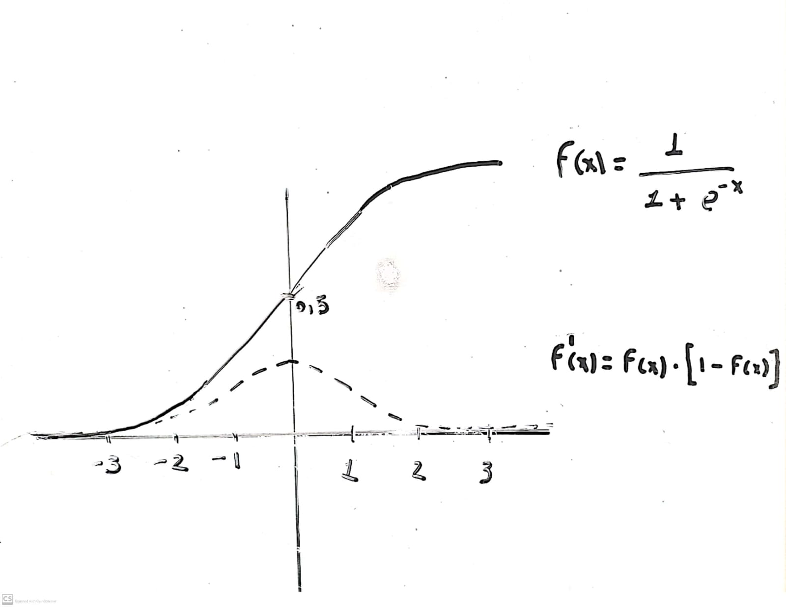
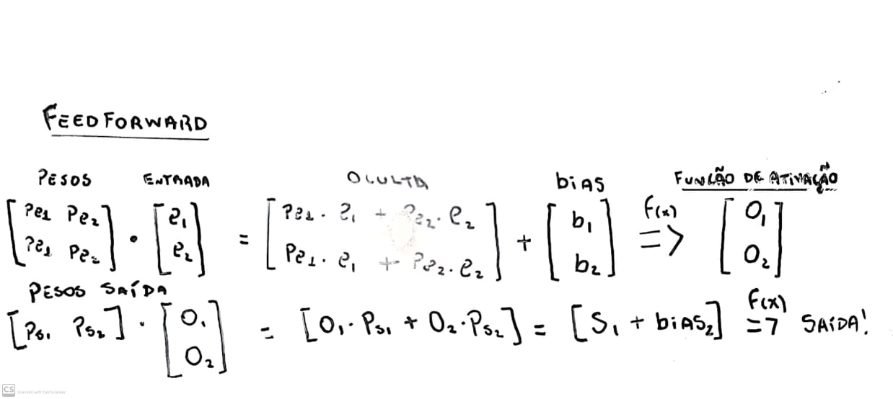
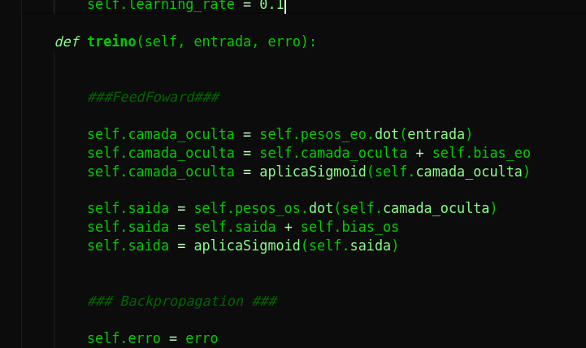
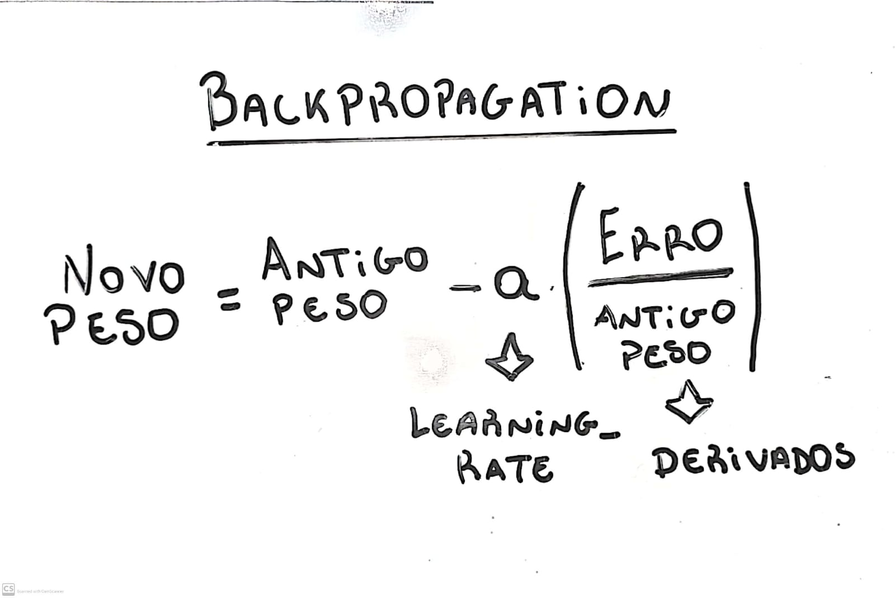
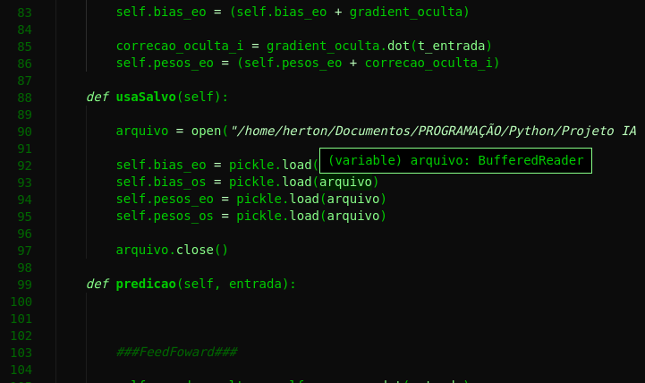

Escrevendo código fonte de uma Rede Neural e implementando a Inteligência Artificial em jogos
Ferramentas Utilizadas
A linguagem escolhida foi o Python, e como forma de acelerar os cálculos e dar ênfase no tratamento e estudo dos dados submetidos para a Rede Neural eu usei:
- Biblioteca Pickle para perpetuar os objetos.
- Biblioteca Matplotlib para a plotagem de Gráficos em tempo real para estudo dos dados.
- Biblioteca Numpy para os cálculos envolvendo Matrizes (que serão utilizadas basicamente em todo código da rede).
- Biblioteca Pygame para a criação do jogo em que a IA será implementada.
Introdução
Redes Neurais são modelos matemáticos que estão relacionados com o aprendizado de Máquina. Em sumo são funções matemáticas que possuem pesos adaptáveis conforme o seu treinamento com entradas e saídas desejadas. A idéia nesse projeto era não só aprender como o código de uma Rede Neural funciona, mas pôr em prática a sua criação, bem como a implementação desses modelos de aprendizagem. Portanto, é importante salientar a que este projeto tentou ao máximo se aproximar ao real de uma rede neural tanto na teoria, quanto na prática, mas está sujeito a falhas, uma vez que sou um estudante iniciante na área das Redes Neurais, bem como na Ciência de Dados e este projeto é justamente para dar esse passo inicial.
Iniciando
Para escrever o código da Rede Neural era preciso estudar o seu funcionamento básico, implemantar as fórmulas matemáticas e aprender os tópicos principais, como as redes neurais FeedFoward, algoritmo de Backpropagation e etc. É importante destacar que as imagens relacionadas a teoria estão na direita e suas respectivas implementações em Python estão na esquerda.
FeedForward


De forma resumida é nesse processo em que as entradas, com entradas quero dizer os números iniciais que a Rede Neural terá contato para a aprendizagem, são multiplicadas pelos pesos, (inicialmente valores randômicos entre 0 e 1). Resumidamente, esses pesos dão relevância aos valores de entrada, isto é, um peso de 30% implica em menos relevância em compararação a uma entrada que possui um peso de 50%, por exemplo.
Ademais, os Bias ou Viés, são elementos somados ao cálculo também, influenciando nos resultados de várias formas.
Função de Ativação


A função usada nesse projeto é a Sigmoid, como visto acima em um desenho de aparência duvidosa feito por min. As Funções de Ativação conferem um caráter não-linear, uma vez que esses cálculos iniciais de soma e produto estabelecem uma relação linear. E por fim aplica-se todos esses cálculos:
 
Backpropagation
Pode-se dizer que essa parte é a mais importante da Rede Neural, uma vez que é aqui em que o cálculo dos novos Pesos e novos Bias serão feitos, ou seja, é aqui que ocorrerá uma adaptação visando alcançar a proximidade do valor de saída desejado.


Implementando
Bom, um dos pontos positivos do código acima é que na class RedeNeural pode-se definir o número de entradas, números de neurônios da camada oculta, bem como o número de neurônios de saída com diversos valores, uma vez que os cálculos de matrizes irão se manter independente da estrutura da Rede Neural, dando uma maior flexibilidade de utilização do código.
Antes de implementar é importante dar ênfase em duas funções específicas da class RedeNeural. As duas são a usaSalvo() e a salvaDados(), pois é nessas funções que ocorre o salvamento e a utilização dos Pesos e Bias já atualizados, ou seja, com os números especícos que produzem o comportamento esperado pela IA.


Jogo para implementação
Por ser o meu primeiro projeto com Redes Neurais decidi usar como teste um jogo simples, sendo esse o Pong. Não vou entrar em detalhes da criação dele, pois o objetivo não é a criação de jogos aqui. O processo vai funcionar da seguinte forma, as entradas serão as posições em um plano cartesiano, com os valores das abscissas e ordenadas da bola, bem como da raquete. A "tarefa" da IA é a partir dessas entradas tentar ao máximo evitar o erro, que é a diferença entre as coordenadas da bola e da raquete. Ora, se o objetivo do Pong é defender a bolinha com a raquete, está claro que suas coordenadas precisam ser similares, ao menos no eixo das ordenadas. A saída será um valor maior do que 0.5 (raquete vai pra cima) ou menor que 0.5 (raquete vai pra baixo), tentando assim diminuir o erro.

Com o jogo criado, a tarefa agora é treinar a Rede Neural. Para isso é importante estar a par do comportamento dos dados, por isso implementei o modo gráfico. A cada 30 frames o jogo atualiza um gráfico que mostra a variação do erro, perceba que esse erro precisa ser o mais próximo de zero.
Inicialmente o erro tem uma variação grande, pois a IA está aprendendo, isto é, os pesos e bias estão constantemente sendo atualizados(a cada frame) para valores que impliquem em um resultado mais próximo do desejado. Perceba que caso o erro seja zero o valor dos pesos se conservam, como visto na fórmula para o cálculo de novos pesos. Ao notar que a IA não vai mais perder, basta parar o programa e gravar os pesos atuais em um arquivo. Agora com esses valores ela é capaz de responder com o movimento correto qualquer posição em que a bola esteja, a tornando uma adversária *invencível. Mas é claro que vou testar isso...

Desligo o modo gráfico, o treinamento da IA e ligo o modo Contra a IA!!

E como já era esperado eu levei uma surra da minha própria criação...
Conclusão
Em sumo, ainda que a aplicação tenha sido simples, acredito que isso abre muitas portas para futuros projetos mais complexos com Redes Neurais e a curto prazo foi de grande importância para o aprendizado de diversas ferramentas voltadas para o controle de dados em Python. Caso ache que as informações acima possuem melhorias a serem feitas, erros ou deslizes, peço que entre em contato comigo, pois o objetivo aqui é sempre evoluir.
Documentos no GitHub aqui!
Referências bibliográficas: https://www.ibm.com/br-pt/cloud/learn/neural-networks